Please note: this article is part of the older "Objective-C era" on Cocoa with Love. I don't keep these articles up-to-date; please be wary of broken code or potentially out-of-date information. Read "A new era for Cocoa with Love" for more.
Creating iPhone and Mac icons using Inkscape (Part 2 of 2)
In this part, I expand on the simple techniques presented in the first part by adding different line, effect and texture styles. I'll also present some Mac application icons and simple texturing.
Introduction
This series covers the creation of the following different icon styles:
The first icon was created in the first part of the series. I'll go through the creation of the remaining variations on the checkbox/checkmark theme in this post.
I'll assume that you've read the first part or are familiar with the techniques involved.
Icon 2: A brighter, more colorful iPhone icon
Goals in this section
- Use a radial gradient
- Learn to adjust all of the common stroke properties
- Learn to adjust a multi-effect filter
The icon developed in Part 1 is very simple — really just a couple white lines over a typical iPhone icon background — which is appropriate for a serious application but might not stand out as prominently against other icons.
In this variation, I'll have the background reach a bright point behind the checkbox element and change the effect on the lines so that the lines look embossed into this bright point — visually integrating the background and the overlayed element.
I'll also introduce a complimentary (opposite hues) color scheme with an azure blue and a red.
A radial background
Starting with a 57x57 document as created in Part 1, add a rectangle filling the document area.
Set the fill to a radial fill and edit the gradient. In the Gradient Editor, click "Add Stop" twice to make the gradient a four part gradient. Top to bottom, the four gradient colors should be:
- RGBA=(192,255,250,255)
- RGBA=(99,164,184,255), Offset 0.26
- RGBA=(5,74,119,255), Offset 0.62
- RGBA=(0,40,80,255)
We now have a bright spot in the center of the background.
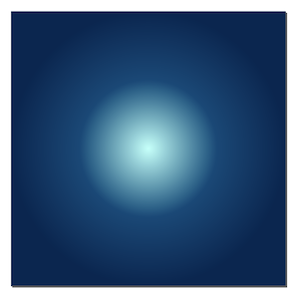Over the top of this, paste (or recreate) the starburst effect from Part — X,Y=(-15.7,-15.7) should center it perfectly.
In the Fill and Stroke palette, set the opacity of the starburst to 100%.
Now, to make the starburst smoother, open the Filter Editor (from the Filters menu) and find the starburst's blur effect (it should be selected in the filter column when the starburst itself is selected). Select the Gaussian Blur effect and set the standard deviation to 0.75.
Different stroke properties for the checkbox and checkmark
Create the checkbox and checkmark in the same way that they were created in the first part or copy them in. If you copy them in, select both the checkbox and the checkmark and choose Filters→Remove Filters to remove the shadow and bevel effect applied in the first part.
Remove the corner radius from the checkbox (select it using the rectangle tool and set the Rx and Ry to zero). In the Fill and Stroke Editor, select the Stroke Style Tab and set the Line Width to 4.0 "px" and the Join Style to rounded. The result of these steps is to create a slightly thicker line that is curved on the corners within its width.
Select the checkmark and set the stroke color to RGBA=(255,42,42,255) and the stroke width to 4.0 "px".
A customized "Cutout glow"
With both checkbox and checkmark selected, choose Filters→Shadows and Glows→Cutout Glow. Go to the Filter Editor and find this Cutout Glow filter. This filter will have 5 effect rows. Select the Offset row and set the X,Y offset to (0.8,0.8). Select the Gaussian Blur row and set the Standard Deviation to 1.0.
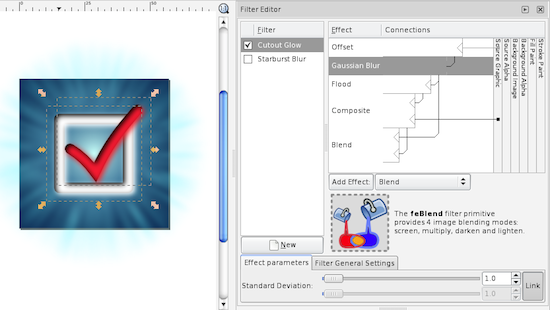Now follow the instructions from the "Apply the gloss effect and round corners" subsection of the previous post to complete the icon.
Icon 3: A cartoonish style

Goals in this section
- Directly edit paths for greater control
- See a Path Effect (Spiro Spline) in action
This variation will forego the starburst effect and instead go for a smoother, more "cartoonish" approach. The checkbox and checkmark will then need to be more distinctive as they will be the only significant graphical elements
Creating a path
Start with the background rectangle from the "brighter, more colorful iPhone icon" created above (if you created a cloned version for the round corners, don't copy the cloned version as it will behave strangely).
Select the Bezier Path tool (11th icon down in the Tool Area). We'll draw the rough loop first.
You can use the Bezier Path tool in one of two ways: simple click-and-release to create corner points and straight line segments or click and drag to create curve points (the dragging then affects the curvature of each point).
For simplicity here, I'll show you how to create the path using corner points and we'll apply the curve as a second step. When you're more comfortable with the Bezier Tool, this can be done as a single step.
Create a point at the 12 o'clock position, then 9, 6, 3 and then underneath the original 12. Then another inside the second twelve and then inside the 3, 6, 9, and between the first and second 12's. Then close the path by clicking on the first point.
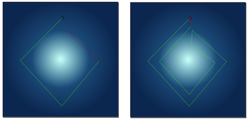Bezier path creation: If you make a mistake with the path, you can either fix it later or press escape to cancel the whole path. Pressing the return-key will end the path without closing it.
Adjusting path control point properties
Using the Node Tool (2nd icon down in the Tool Area) ensure the path you just created is selected. Drag a selection box around the nodes at 3, 6 and 9 o'clock (don't select the nodes at 12 o'clock). In the toolbar at the top, select the "Make selected nodes smooth" button (should be 8th from the left in the toolbar immediately above the window).
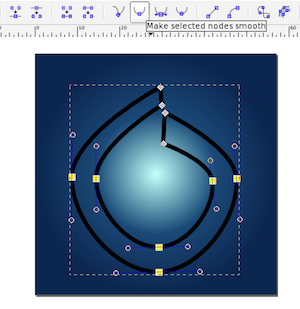Applying a path effect
Leaving the path selected, choose the Path→Path Effect Editor menu item. In the Path Effect Editor palette, select "Spiro Spline" from the popup menu and click the "Add" button. The "Spiro Spline" is an effect that makes smooth curved paths much easier than regular Bezier curves.
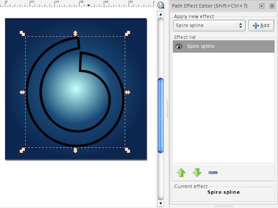Once this is done, you can tweak the nodes in the path (using the Node Tool) until it is the exact shape desired.
In the Fill and Stroke Editer, remove any stroke, apply a faded yellow to faded orange linear gradient fill from left to right across the checkbox loop and it is done.
Stroke to path
Create the checkmark as for the previous icons but set the Stroke Width to 6 "px" and the Style Join and Cap to square corners. With the path selected, choose the menu item Path→Stroke to Path. This will turn the line into a filled path. Set the stroke of this path to "no stroke" and set the fill to an orange to red linear gradient fill from left to right across the checkmark.
Now we need to adjust the checkmark to have a looser aesthetic. Select the Node Tool and the checkmark. Drag the lines in the short stem upwards slightly and the lines in the long stem inwards slightly. Adjust the control points at the ends of each stem so that they are flared outwards a little.
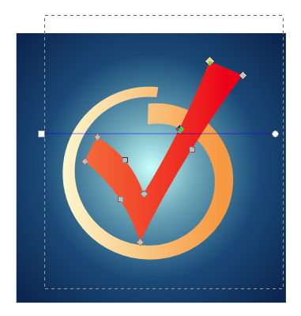Follow the instructions from "Bevel effect and shadow" from Part 1 to apply these effects. Follow the instructions from the "Apply the gloss effect and round corners" subsection of the previous post to complete the icon.
Icon 4: A document-based Mac icon
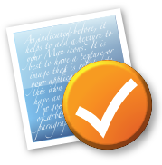Goals in this section
- See the common components of a Mac document-based application icon
- Use multiple overlapping gradients to achieve softer gradients
- Add a texture to a background by filling with text
In terms of colors and effects, Mac icons tend to be far more subdued than iPhone icons. Where iPhone icons are only shown on the Home screen but are small and need to stand out, Mac icons may sit in the Dock for extended periods and shouldn't be distracting during this time.
For this reason, Mac icon colors tend to be slightly more subdued than iPhone icon colors and are frequently much lighter overall.
While Mac icons are typically larger (an average of around 64x64) they can also be shown at smaller resolutions. The approach to satisfying the size range is normally to compose the icon from two key parts:
- An object or item that is easily recognizable in silhouette or at small sizes
- Texture or subtler elements that fade away at smaller sizes but add structure and context at larger sizes
Mac icons must also handle a range of different background colors as they may be shown against people's desktop backgrounds, white folder backgrounds or against the near black of a vertical Dock. To achieve good contrast against the background, most icons are generally light in color but with a subtle shadow behind them — not for 3D effect but to contrast with lighter backgrounds. Many icons also incorporate a frame or boundary into the representation which further adds to the strength of the icon's silhouette.
A rotated background
To start the icon, create a 64x64 px document. This size will help us optimize for the expected screen resolution.
Into this, draw a 44 by 50 rectangle. Give it an azure to deep blue linear gradient from left to right and a white 3px stroke.
Using the Selection Tool (first in the Tool Area), select the rectangle. Initially, this will show the resizing arrows around the shape. Click a second time to switch these arrows to the rotating arrows (don't double click as that will switch to the Node Tool). Click and drag one of the corner arrows to rotate the rectangle by 8° (the rotated angle should be visible in the status bar at the bottom of the window while dragging but the exact angle isn't important).
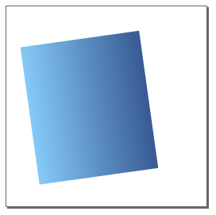Some effects and another gradient
On its own, a single gradient isn't a very impressive effect. The trick in making a background effect that is both attractive and subtle, is normally to layer a few different effects on top of each other.
With the rectangle selected, select "Path"→"Union". This may seem like a weird thing to do but it actually recreates the object using a path at the rotated orientation. We do this because Effects in Inkscape (like the shadow we're just about to apply) look bad (pixelated) when rotated. Recreating the object at this rotation means the effect will not have a rotation applied.
Copy and paste this rotated rectangle and put the copy next to the original. Apply a drop shadow to the original with 50% opacity, Offset of (1,1) and radius of 1.5.
Now remove the stroke from the copy. You'll notice that without the white stroke covering 1.5 px of the copy, the gradient region of the copy actually looks slightly bigger than the original. We need this shape to be the same size as the colored area of the original, so use the Selection Tool and with the rezize arrows, adjust the two to match (set the color to a flat fill like red and overlap the two objects to make it easier).
Now set the second object to have a top to bottom (parallel to its rotated axis) linear gradient fill with four color points:
- RGBA=(168,247,249,255)
- RGBA=(144,198,215,0), Offset 0.30
- RGBA=(95,144,175,0), Offset 0.70
- RGBA=(18,49,106,255)
Since this second gradient is transparent in the middle, it will show the first gradient in varying amounts through the middle. Overlapping the two should result in a softer gradient that vaguely resembles diffuse lighting across a slightly convex surface.
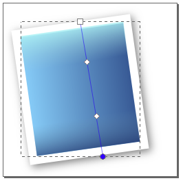A light text-based texture
The formatting of the following paragraph is not an mistake.
- As indicated before, it
helps to add a texture to
your Mac icons. It is best
if you have a texture or
image that is related to
your application — for
this icon I don't really
have an application, so
I'm going to use a block
of arbitrary text (this
paragraph, in fact).
The Text Tool is two icons above the Gradient Tool. Click on the document to create a text object and type the text shown and formatted as above. With the text object selected, choose the Zapfino font from the font popup menu in the top toolbar. I like Zapfino because when zoomed out, it seems ornate and indistinct.
Now use the Selection Tool to scale and position the text object over the other gradient rectangles.
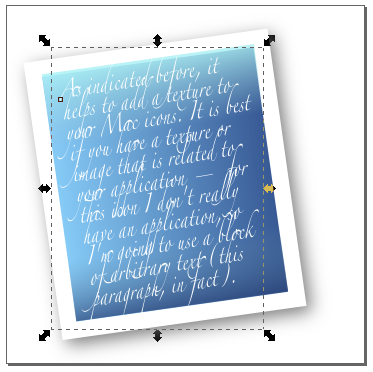To add a gloss effect over everything, create a 53 by 28 rectangle, with a flat RGBA=(255,255,255,60) fill and no stroke and rotate and position it over the top half of the existing shapes.
The "representative" element
For the representative element, I'll use a checkmark in an orange circle. Create a checkmark line (same as in previous icons) set a white 5 px stroke on the checkmark.
Create a 43 by 43 circle (unlike the Rectangle Tool, you can't specify the size of a circle with the Circle Tool selected. If you want to do this, you'll need to use the Selection Tool). Set a red-orange to yellow-orange radial gradient on the object and no stroke.
Using the Gradient Tool, drag the center control point of the gradient to the bottom-right corner of the circle's bounding box, the endpoint of the horizontal stem to the bottom-left corner and the vertical endpoint to the top-right corner.
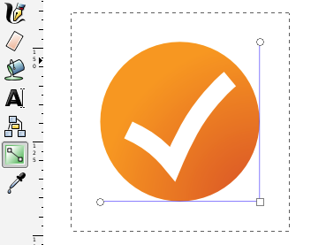With the circle selected, use the menu item Filters→ABCs→Diffuse Light. Then use the Filter Editor to set the Gaussian Blur effect of this filter to a Standard Deviation of 1.0. Then apply a drop shadow to the circle.
Finally, position everything together and the icon is complete.
Icon 5: A circular Mac icon
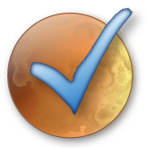Goals in this section
- See the common components of a Mac "appliance" application icon
- Apply effects to a path to make the boundary shape more interesting and more distinct from the background
- Create a texture using an effect
A circular icon is constructed in the same way as a rectangular backed icon. The only significant differences are:
- gradients tend to be various kinds of radial gradient to give a convex feel to the round shape
- the overlayed element will be more centered so it helps if it is less solid (thinner and lighter)
Compose a round icon
Since you've seen how to put together basic shapes and radial fills before, I'll just show you the components I used to create this icon as a graphic:
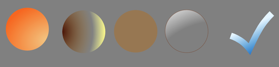Notice how bright the elements all are: Mac icons are normally quite bright — you want to avoid a "muddy" effect with too many dark colors.
When composing elements, if one of them is at the wrong depth (overlaps other objects wrong) you can change the depth by selecting the object and using the Page Up/Page Down keys (or by using the "Object"→"Raise"/"Lower" menu items).
Make the checkmark look interesting
The checkmark must stand alone in this icon, which means that it should have a few special effects applied to it so that it doesn't look sterile and boring. I applied the following effects to the checkmark:
- Filters→Non-realistic 3D shaders→Comics
- Filters→Shadows and Glows→Inner Glow. For this filter, I changed the Flood color to a medium blue and reduced the Gaussian Blur (now the second blur in the Effects list for this object after the Comics blur from the previous effect) to a Standard Deviation of 1.0.
- A drop shadow.
To texture the circle, I used the RGBA=(176,112,42,140) circle (middle element shown above) and applied a Filters→Image effects, transparent→Marbled ink effect. This gives a slightly moon cratered look that matches the somewhat planetoid shape of the object.
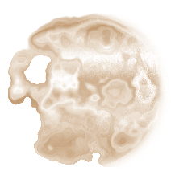Conclusion
You can download an Inkscape SVG file containing all the icons and their compositions (482kB).
{kind=link}
This two part series has been outside the normal domain of programming information that I provide. However, applications programmers will regularly find themselves needing to create, edit or adjust artwork-related assets in their applications. I hope I've given some useful tips on the way artwork assets are composed and ways you can make your artwork look good, even if it is very simple.
With iPhone or Mac icons, they are typically composed from the same elements:
- A background gradient (or two).
- A texture or additional effect.
- A gloss or lighting highlight.
- A foreground element or symbol representing your application which, after the other elements are applied, need only be very simple.
With gradients and effects, it is helpful to use a few so that your icon seems rich on close inspection but to keep each one very subtle since they shouldn't distract or make the icon harder to perceive (in a quick glance, the user shouldn't even see the effects you've added).
Icons do not need to be complex; the most professional icons are often very basic. Lack of artistic skill need not be a hinderance if you keep it simple.
Creating iPhone and Mac icons using Inkscape (Part 1 of 2)
A drop-in fix for the problems with NSHost